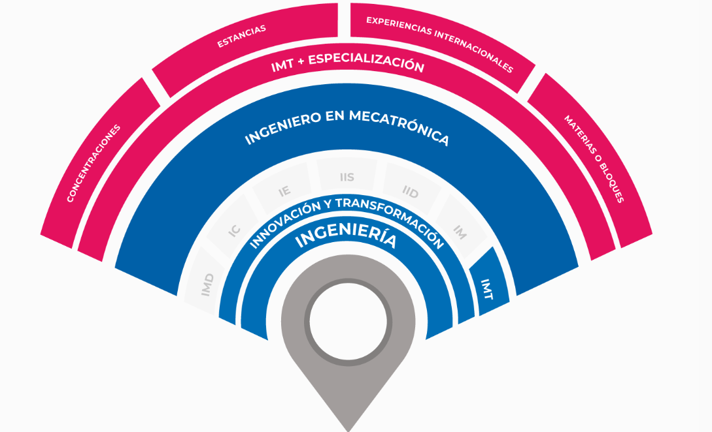

El programa de Ingeniería en Mecatrónica del Tecnológico de Monterrey tiene como objetivo formar ingenieros con una base sólida en mecatrónica, la sinergia e integración de mecánica, electrónica, programación y control, capaces de integrar, diseñar y fabricar dispositivos, máquinas y sistemas automáticos. Sus aplicaciones incluyen automatización industrial, robots industriales, robots de propósito general, dispositivos médicos, dispositivos automotrices y dispositivos aeroespaciales entre otros. Los egresados de la carrera de Mecatrónica se desempeñan en empresas que utilizan sistemas automatizados de producción, como consultores, emprendiendo su propia empresa, o bien, continuando estudios de posgrado.
Competencias:
Integra componentes mecánicos, electrónicos, de control y de software, cumpliendo con requerimientos funcionales, económicos y de seguridad.
Diseña sistemas mecatrónicos de vanguardia atendiendo necesidades tecnológicas en diversos ámbitos.
Automatiza sistemas y procesos cumpliendo criterios de desempeño y normativa vigente.
Elabora propuestas de sistemas mecatrónicos cumpliendo especificaciones.
Perfil de ingreso
El Tecnológico de Monterrey busca integrar en todas sus carreras profesionales a una nueva generación de estudiantes que hayan concluido sus estudios de bachillerato y que se distingan por ser: personas talentosas, entusiastas, comprometidas con el desarrollo de su entorno y con el bienestar de la sociedad; personas que tengan el potencial para concluir exitosamente su programa de licenciatura y convertirse en líderes con espíritu emprendedor, sentido humano y competitivos internacionalmente.
Campo Laboral
Al egresar de la carrera de Ingeniería en Mecatrónica podrás desarrollarte en distintas áreas de una organización, tales como:
Sistemas automatizados de producción (ejemplo: sector automotriz, aeroespacial, manufactura, petroquímico, agropecuario, farmacéutico, entre otros).
Desarrollo y aplicación de tecnologías emergentes (ejemplo: impresión 3D, drones, vehículos autónomos, robots y exoesqueletos).
Centros de investigación y desarrollo tecnológico.
Consultoría especializada.

Exploración
Iniciarás tu expediente de competencias, mismo que irás alimentando a lo largo de tu carrera.
Te formarás en los fundamentos específicos de tu área de ingreso.
Participarás en un reto fundamental y en retos de exploración de tu área en los que interactuarás con compañeros de distintas carreras.
Cursarás materias de educación general, de un acervo a elegir.
Participarás en un reto integrador de todas las competencias previstas para desarrollarse en esta fase.
Enfoque
Te formarás en las competencias core, de tu carrera es decir, aquellas que la distinguen.
Participarás en retos más enfocados, para reforzar lo aprendido y ampliar fundamentos.
Contarás con los elementos para decidir entre profundizar o diversificar y armar tu plan de especialización en consecuencia.
Las semanas Tec, los retos y vivencias universitarias enriquecerán tu expediente.
Especialización
Has decidido entre diversificarte o profundizar aún más en tu carrera y lo harás al elegir una concentración o una estancia, por mencionar algunas de tus opciones. El semestre Tec es el espacio de tiempo flexible para iniciar.
Desarrollarás competencias propias de tu especialización, cada vez más conectadas a tus pasiones, intereses y planes.
Al aprobar una concentración desarrollarás sus competencias y al graduarte serás candidata o candidato a obtener el Diploma de dicha concentración al cumplir con los requisitos establecidos.